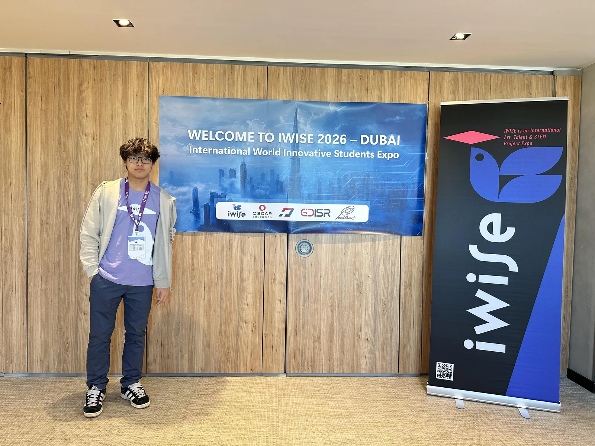
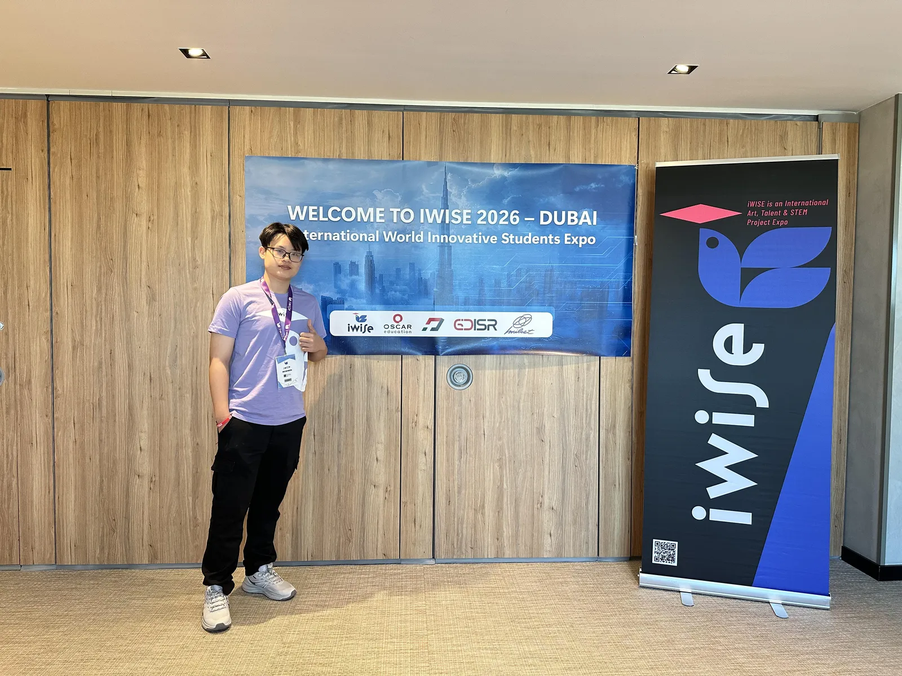
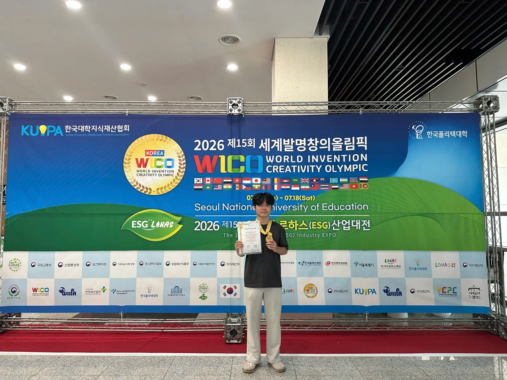
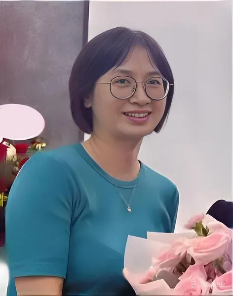
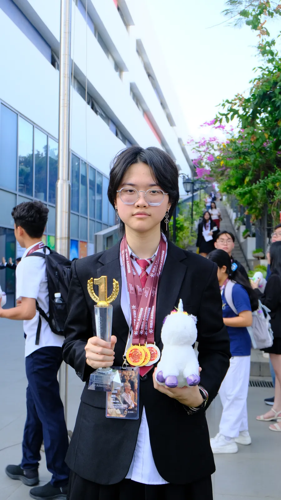
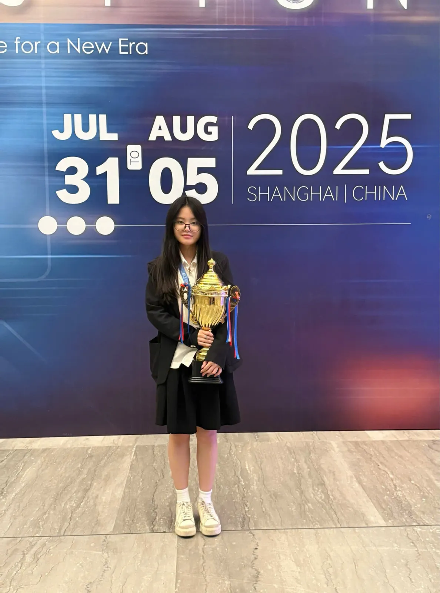
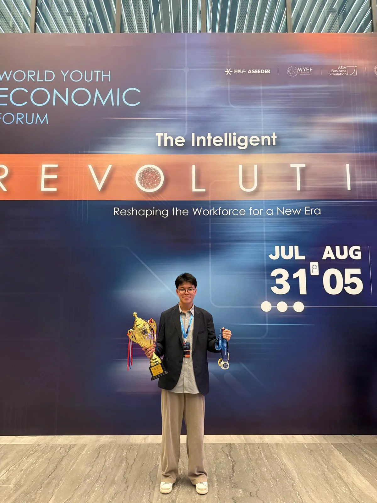
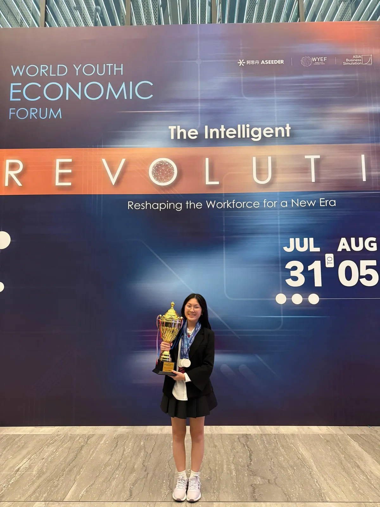

Mentorship
Students are grouped into team (4-6 members) or potentially paired with professional scientists who act as their mentors throughout the program. The mentors provide guidance, knowledge, and support as the student undertakes research.
ADVANCED SCIENTIFIC RESEARCH
A research project built around your curiosity - with expert mentorship to take it further.
Start your research journey
ASK ORIGINAL QUESTIONS
Advanced Scientific Research refers to the process in which a student, typically in grades 8-12, will identify a topic of their own choosing based on their own personal interests and curiosity and will develop an authentic research project to answer an original research question across fields spanning Natural Sciences, Technology & Engineering, Social Sciences, Business & Finance,... Working alongside expert mentors, students formulate their research question, design a methodology, collect and analyze data, and produce findings that are entirely their own. These findings are then written up as an academic paper and presented at local, national, and international science competitions and symposia with standout projects moving forward to publication in peer-reviewed journals.
At GSJ, we recognize that the most powerful driver behind every great research project is a student's genuine curiosity and passion for discovery and our scientific research program is built to channel exactly that into real, publishable, competition-ready work.
FROM QUESTION TO CONTRIBUTION
Students are grouped into team (4-6 members) or potentially paired with professional scientists who act as their mentors throughout the program. The mentors provide guidance, knowledge, and support as the student undertakes research.
Upon completion of their research, students are required to write an academic-level research paper detailing their methodology, results, and conclusions following standard scientific format and guidelines.
Students showcase their findings before a panel of experts at GSJ, various competitions, symposia, and science fairs at national and international levels. This provides them with the opportunity to communicate their research effectively and receive feedback from peers and professionals in the field.
Exceptional research projects have the chance to be published in scientific journals, thereby contributing meaningfully to the scientific community. Moreover, students stand a chance to win accolades and recognition for their exemplary work through competitions and symposia.
GROW THROUGH DISCOVERY
Scientific research encourages students to explore their curiosity, think outside the box, and come up with innovative solutions to complex problems.
Students gain practical experience in scientific research, learning essential skills in critical thinking, problem-solving, data analysis, and scientific writing.
By working closely with a mentor, students build valuable connections within the scientific community, opening doors to future opportunities in academia and industry. Students also learn to work collaboratively with peers and supervisors in a professional setting.
The program hones students' skills in research design, experimentation, data interpretation, and presentation, laying a solid foundation for their future academic and professional pursuits.
Participation in scientific research demonstrates to university admissions officers a student's passion for learning, ability to work independently, and dedication to a particular field of study, giving applicants a competitive edge during the university admissions process.
THE RESEARCH PROCESS
Choose a topic driven by your own interests and curiosity.
Review the literature, identify a gap and frame an original question.
Design the methodology and plan the work with your mentor.
Collect evidence and carry out your research in professional environments.
Analyze the data and develop evidence-based conclusions.
Write a research report and share your findings with an expert audience.
OUR STUDENTS, OUR IMPACT
Hear from the students and families behind the achievements.
Looking back on my high school years, what has shaped me the most was not only exams or grades, but also my experience working on research project at GSJ.
Before this project, I had participated in several smaller research activities, but mostly at an introductory level. It was only through hands-on experimental research that I began to understand the level of persistence and pressure that laboratory work requires.
To optimize the product, my team continuously tested different conditions, including strip-drying temperatures and gold nanoparticle incubation times. During some stages, we spent multiple sessions assembling dozens to hundreds of test kits, followed by spectral measurements and result evaluations. Although the repetitive nature of the work could sometimes be demanding, it also taught me how to stay focused and work more systematically.
Throughout the process, I received significant support from the teachers and mentors at GSJ. From shaping the research direction and refining the procedure to providing technical guidance during experiments, their support motivated me to stay committed to the project. Being introduced to research early on and having clear guidance also helped me feel more confident when presenting my academic journey during university applications.
What I found most meaningful was how scientific research transformed learning from something purely theoretical into a practical experience. Instead of only studying concepts from textbooks, I had the opportunity to test hypotheses directly through real data and experimental results.
By the end of this journey, what I gained was not only a completed research project, but also stronger working skills, better time management, and a more proactive mindset as I prepare for university life ahead.

Nearly US$400,000 in scholarships from leading universities worldwide (NUS, UVA, UGA, UConn, USF, University of Melbourne, VinUniversity, ...)
I sincerely want to thank all the teachers at GSJ, friends, mothers, and everyone who joined the competition in Dubai. I’m truly grateful not only for the opportunity to participate in this competition, but also for all the memorable experiences throughout the journey.
I have never met people as kind and genuine as everyone here. I truly appreciate and cherish all of you, and I hope we will meet again someday.
Wishing everyone all the best, with lots of happiness, good health, and peace. Victory Vietnam!

Gold Medalist at iWise Global Final
Hi, my name is Lan Bao, and I recently won a Gold Medal at the iWise Competition in Dubai. Throughout my preparation for the competition, I was very grateful to receive support from the GSJ team, especially Mrs. Vu Ngan Binh.
She helped me carefully prepare every detail of my project, including the abstract, report files, tables, and presentation materials. With the support and guidance from the GSJ team, I was able to complete all of my work on time and feel much more prepared for the competition.
The mentoring process also helped me improve my presentation skills and become more confident in answering questions during the judging session. I truly appreciate all the support and encouragement I received throughout this journey.

Student at The Dewey Schools, Gold Medalist at iWise Global Final
During the experimental research process, there were times when our results did not turn out as expected. But under the guidance of our teachers, we were able to find the root causes and solutions, which helped us develop our problem-solving mindset. I am truly grateful to the teachers for always encouraging and accompanying us throughout the entire research journey. This was truly an incredible milestone that we will always remember and cherish.

Student at Hanoi Amsterdam High School for the Gifted, University of Illinois Urbana-Champaign (#34 NU)
All of us in this project are students from Chemistry classes at our high school for the gifted. The depth and breadth of knowledge we receive at school is fairly solid, comparable to university level. However, our hands-on experience is still limited, most of what we learn remains theoretical. That is why joining GSJ's scientific research program felt like the right decision. It is a way for me to explore whether research is truly the path I want to pursue, and to discover which specialization within such a vast field genuinely resonates with me.

Student in the Environmental Chemistry Research Project
The most valuable thing today is that the teachers here are people who have genuinely conducted research and are still actively doing so. This is incredibly precious, as our children can learn a great deal from them for the journey ahead. This is also a rare opportunity for children to engage in research from an early age, which will nurture their scientific thinking in the natural sciences and beyond.

Parent of Student Nguyen Tue Linh - Silver Medalist at iWise Global Final
Watching my child grow step by step through the scientific research journey, I cannot help but feel deeply moved and proud. From the very first days coming to the lab for hands-on practice, to the moment she confidently presented in front of professors and experts, I truly witnessed her grow more than I ever imagined. And when she received the certificate of merit at an international competition, I knew that all of her efforts and the support from GSJ had been well rewarded. I am truly grateful to the team of teachers who have created such a professional learning environment, where students not only gain knowledge but also have the opportunity to develop their skills and discover their own potential.

Parent of Student Nguyen Quynh Trang - University of Illinois Urbana-Champaign (#34 NU)
Throughout our training time at GSJ, Mrs Nga and Mrs Binh have always been with us and been training us all the time.They were like mothers to us. They took care of us and walked us through all the rounds; they stayed up with us to check our progress and make sure that everything was neat, such as operation and auction. Especially, they showed us the mindset, how to work with the numbers, and how to get the best prices, especially for auction and operation. It decided a lot of our results in the end, and without their help, we wouldn't have this award today.

Gold Medalist, ABS Ho Chi Minh City Regional Round
The thorough preparation and dedicated support from the GSJ teachers gave me the confidence to step onto the international stage. The principle of ‘better overprepared than overlooking anything’ during our training became one of our team’s greatest advantages.
The Auction and Operation rounds were the most mentally challenging, requiring us to calculate accurately, communicate effectively, and confidently debate with international teams. After the journey, our entire team became more mature, calmer, and better at accepting as well as facing every decision.
I learned many valuable lessons, connected with outstanding friends, and felt deeply grateful for the enthusiastic support from the GSJ teachers and the trust from my parents - the people who gave me the courage to see the world more clearly.
Give it your all so you will never have regrets.

Gold Medalist, ABS Global Final Winning Team
My most memorable experience was staying up until 2 or 3 a.m. preparing presentation slides for the next day. Seeing everyone still working tirelessly after such a long and exhausting competition day gave me so much motivation to keep pushing forward.
Hard work pays off with tremendous effort and a little bit of luck, we managed to win first prize in every category and bring home the gold trophy.

Gold Medalist, ABS Global Final Winning Team
Before the competition, I was still shy and hesitant when applying knowledge to real-life situations, and I was nervous about sharing my ideas with international peers. After ABS, I became much more confident in presenting and defending my viewpoints, while also learning how to listen and respond effectively.
I also broadened my perspective by making friends with students from many different countries. This experience helped me gain a clearer vision for my future path pursuing fields related to critical thinking, creativity, and solving global issues while also becoming a valuable advantage for my study abroad profile.

Gold Medalist, ABS Global Final Winning Team
LET’S SHAPE WHAT’S NEXT
Explore a question that matters to you, with expert mentorship at every stage.